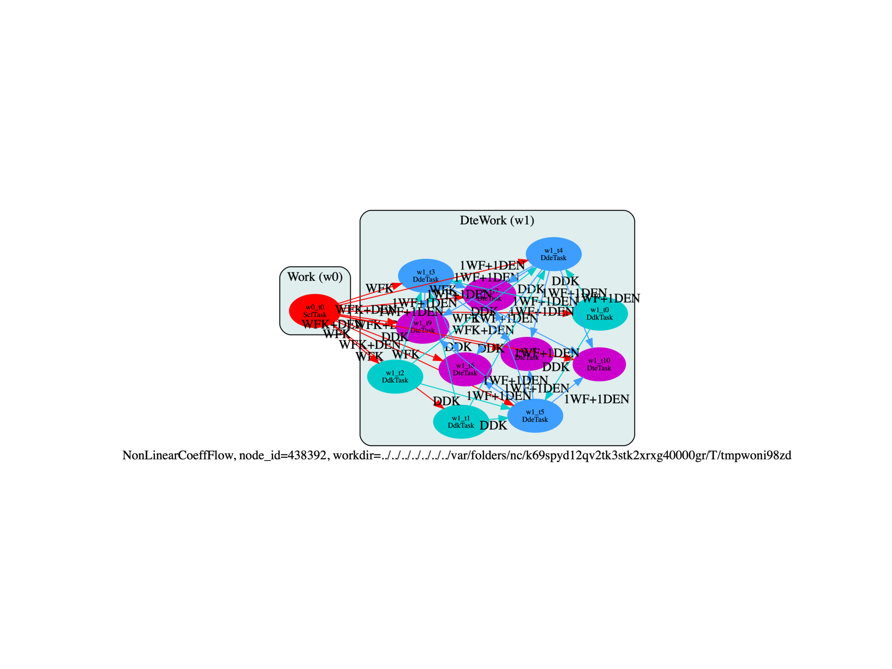

Flow to compute non-linear optical properties with DFPT (static limit).
from __future__ import division, print_function, unicode_literals
import sys
import os
import abipy.flowtk as flowtk
import abipy.data as abidata
from abipy import abilab
minimum_abinit_version = "8.5.2"
def make_scf_input(ecut=10, ngkpt=(8, 8, 8)):
"""
This function constructs an `AbinitInput` for performing a
GS-SCF calculation in crystalline AlAs.
Args:
ecut: cutoff energy in Ha.
ngkpt: 3 integers specifying the k-mesh for the electrons.
Return:
`AbinitInput` object
"""
# Initialize the AlAs structure from an internal database. Use the pseudos shipped with AbiPy.
gs_inp = abilab.AbinitInput(structure=abidata.structure_from_ucell("AlAs"),
pseudos=abidata.pseudos("13al.981214.fhi", "33as.pspnc"))
# Set the value of the Abinit variables needed for GS runs.
gs_inp.set_vars(
nband=4,
ecut=ecut,
ngkpt=ngkpt,
nshiftk=1,
shiftk=[0.0, 0.0, 0.0],
ixc=7,
nstep=500,
iscf=7,
diemac=5.0,
toldfe=1.0e-22,
nbdbuf=0,
kptopt=1,
)
gs_inp.set_mnemonics(True)
return gs_inp
def build_flow(options):
if not options.workdir:
options.workdir = os.path.basename(__file__).replace(".py", "").replace("run_", "flow_")
scf_input = make_scf_input(ecut=10, ngkpt=(6, 6, 6))
return flowtk.NonLinearCoeffFlow.from_scf_input(options.workdir, scf_input)
# This block generates the thumbnails in the Abipy gallery.
# You can safely REMOVE this part if you are using this script for production runs.
if os.getenv("GENERATE_SPHINX_GALLERY", False):
__name__ = None
import tempfile
options = flowtk.build_flow_main_parser().parse_args(["-w", tempfile.mkdtemp()])
build_flow(options).plot_networkx(tight_layout=True)
@flowtk.flow_main
def main(options):
"""
This is our main function that will be invoked by the script.
flow_main is a decorator implementing the command line interface.
Command line args are stored in `options`.
"""
return build_flow(options)
if __name__ == "__main__":
sys.exit(main())
Total running time of the script: ( 0 minutes 0.901 seconds)